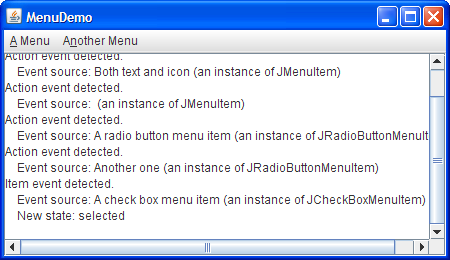
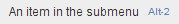
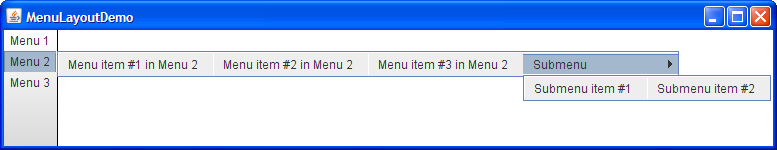

Lección: Usando Componentes Swing
Sección: Cómo Usar Varios Componentes
Cómo Usar Menús
Un menú ofrece una forma de ahorrar espacio que permite al usuario elegir una de varias opciones. Otros componentes con los que el usuario puede hacer una-de-muchas elecciones incluyen los cuadros combinados, las listas, los botones de opción, contadores numéricos, Y barras de herramientas. Si alguno de sus elementos de menú ejecutan una acción que está duplicada por otro elemento de menú o por un botón de barra de herramientas, entonces, además de esta sección, debería leer Como Usar Acciones.
Los menús son únicos en eso, por convención, no están colocados con los otros componentes en el IU (Interfaz de Usuario). En vez de eso, un menú usualmente aparece o en una barra de menú o como un menú emergente. Una barra de menú contiene uno o más menús y tienen una ubicación acostumbradamente dependiente de la plataforma ─ usualmente en la parte superior de una ventana. Un menú emergente es un menú que es invisible hasta que el usuario realiza una acción del ratón específica de la plataforma, tal como presionar el botón derecho del ratón, sobre un componente habilitado para elementos emergentes. El menú emergente aparece entonces bajo el cursor.
La siguiente figura muestra muchos componentes relacionados con menús: una barra de menú, menús, elementos de menú, botones de radio elementos de menú, casillas de verificación elementos de menú, y separadores. Como puede ver, un elemento de menú puede tener o una imágen o texto, o ambos. Puede también especificar otras propiedades, tales como la fuente de letra y el color.
Intente esto:
-
Pulse el botón Lanzar para ejecutar la Demo MenuLook usando
Java™ Web Start (
descargar KDJ 7 o posterior). Alternativamente, para compilar y ejecutar el ejemplo usted
mismo, consulte el índice de ejemplos.

Debido a que este código no tiene manejo de eventos, los menús no hacen nada útil excepto mostrase como deberían. Si ejecuta el ejemplo, notará que a pesar de la falta de manejo personalizado de eventos, los menús y submenús aparecen cuando debieran, y las casillas de verificación y los botones de radio responden apropiadamente cuando el usuario los selecciona.
//Donde se crea el IGU:
JMenuBar menuBar;
JMenu menu, submenu;
JMenuItem menuItem;
JRadioButtonMenuItem rbMenuItem;
JCheckBoxMenuItem cbMenuItem;
//Crea la barra de menú.
menuBar = new JMenuBar();
//Construye el primer menú.
menu = new JMenu("A Menu");
menu.setMnemonic(KeyEvent.VK_A);
menu.getAccessibleContext().setAccessibleDescription(
"El único menú en este programa que tiene elementos de menú");
menuBar.add(menu);
//un grupo de JMenuItems
menuItem = new JMenuItem("Un elemento de menú de sólo texto",
KeyEvent.VK_T);
menuItem.setAccelerator(KeyStroke.getKeyStroke(
KeyEvent.VK_1, ActionEvent.ALT_MASK));
menuItem.getAccessibleContext().setAccessibleDescription(
"Esto realmente no hace nada");
menu.add(menuItem);
menuItem = new JMenuItem("Texto e icono",
new ImageIcon("images/middle.gif"));
menuItem.setMnemonic(KeyEvent.VK_B);
menu.add(menuItem);
menuItem = new JMenuItem(new ImageIcon("images/middle.gif"));
menuItem.setMnemonic(KeyEvent.VK_D);
menu.add(menuItem);
//un grupo de elementos de menú de tipo botones de radio
menu.addSeparator();
ButtonGroup group = new ButtonGroup();
rbMenuItem = new JRadioButtonMenuItem("Un elemento del menú de tipo botón de opción");
rbMenuItem.setSelected(true);
rbMenuItem.setMnemonic(KeyEvent.VK_R);
group.add(rbMenuItem);
menu.add(rbMenuItem);
rbMenuItem = new JRadioButtonMenuItem("Otro");
rbMenuItem.setMnemonic(KeyEvent.VK_O);
group.add(rbMenuItem);
menu.add(rbMenuItem);
//un grupo de elementos de menú de tipo casilla de verificación
menu.addSeparator();
cbMenuItem = new JCheckBoxMenuItem("Un elemento de menú de tipo casilla de verificación");
cbMenuItem.setMnemonic(KeyEvent.VK_C);
menu.add(cbMenuItem);
cbMenuItem = new JCheckBoxMenuItem("Otro");
cbMenuItem.setMnemonic(KeyEvent.VK_H);
menu.add(cbMenuItem);
//un submenu
menu.addSeparator();
submenu = new JMenu("A submenu");
submenu.setMnemonic(KeyEvent.VK_S);
menuItem = new JMenuItem("Un elemento en el submenu");
menuItem.setAccelerator(KeyStroke.getKeyStroke(
KeyEvent.VK_2, ActionEvent.ALT_MASK));
submenu.add(menuItem);
menuItem = new JMenuItem("Otro");
submenu.add(menuItem);
menu.add(submenu);
//Construye el menu segundo en la barra de menú.
menu = new JMenu("Otro Menu");
menu.setMnemonic(KeyEvent.VK_N);
menu.getAccessibleContext().setAccessibleDescription(
"Este menú no hace nada");
menuBar.add(menu);
...
frame.setJMenuBar(theJMenuBar);
Como el código muestra, para establecer la barra de menú para un JFrame, use el método
setJMenuBar. Para añadir un JMenu a un JMenuBar, use el método
add(JMenu). Para añadir elementos de menú y submenús a un JMenu, use el método
add(JMenuItem).
Nota:
Los elementos de menú, como otros componentes, sólo pueden estar en un contenedor como máximo. Si intenta añadir un elemento de menú a un segundo menú, el elemento de menú será eliminado del primer menú antes de ser añadido al segundo. Para una forma de implementar múltiples componentes que hacen lo mismo, consulte Cómo Usar Acciones.
Otros métodos en el código precedente incluye setAccelerator y setMnemonic,
los cuales son detallados un poco más tarde en Habilitar la Operación del Teclado. El
método setAccessibleDescription se describe en
Cómo Apoyar las Tecnologías de Asistencia.
Manejar Eventos desde Los Items de Menú
Para detectar cuando el usuario elige un JMenuItem, puede escuchar los eventos de acción (tal como
haría para un JButton). Para detectar cuando el usuario elije un
JRadioButtonMenuItem, puedes escuchar eventos de acción o eventos de elementos, como se describe en
Cómo Usar los Botones de Radio. Para los JCheckBoxMenuItems,
generalmente escucha eventos de elemento, como se describe en
Cómo Usar las Casillas de Verificación.
Intente esto:
-
Pulse el botón Lanzar para ejecutar la Demo Menú usando
Java™ Web Start (
descargar KDJ 7 o posterior). Alternativamente, para compilar y ejecutar el ejemplo usted
mismo, consulte el índice de ejemplos.

Aqui tiene el código que implementa el manejo de eventos:
public class MenuDemo ... implements ActionListener,
ItemListener {
...
public MenuDemo() {
//...para cada instancia JMenuItem:
menuItem.addActionListener(this);
...
//para cada JRadioButtonMenuItem:
rbMenuItem.addActionListener(this);
...
//para cada JCheckBoxMenuItem:
cbMenuItem.addItemListener(this);
...
}
public void actionPerformed(ActionEvent e) {
//...Obtiene información del evento de acción...
//...Lo muestra en el área de texto...
}
public void itemStateChanged(ItemEvent e) {
//...Obtiene información del evento de elemento...
//...Lo muestra en el área de texto...
}
Para ver ejemplos de manejo de eventos de acción y elemento. vea las secciones Botón, Botón de radio, y casilla de verificación, como también la lista de ejemplos al final de estsa sección.
Habilitación del Funcionamiento del Teclado
Los menus sopoertan dos clases alternativas del teclado: mnemotécnicos y aceleradores. Los Mnemotécnicos ofrecen una forma de usar el teclado para navegar la jerarquí del menú, incrementando la accesabilidad de los programas. Los Aceleradores, por otra parte, ofrecen atajos de teclado pasando por alto la navegación por la jerarquía del menú. Los Mnemotécnicos son para todos los usuarios; los aceleradores son para usuarios avanzados.
Un mnemotécnico es una tecla que hace que un menú ya visible sea elegido. Por ejemplo, en MenuDemo
el primer menú tiene el mnemotécnico A, y su elemento segundo de menú tiene el mnemotécnico B. Esto signfica
que, cuando ejecuta MenuDemo con la apariencia Java, presionar las teclas Ant y A hacen al primer
menú aparecer. Mientras el primer menú es visible, presionar la tecla B (con o sin Alt) hace que el segundo
elemento de menú sea elegido. Un elemento de menú generalmente visualiza su mnemotécnico subrayando la primera
ocurrencia del carácter mnemotécnico en el texto del elemento de menú, como la siguiente captura muestra.
Un acelerador es una combinación de teclas que causa que un elemento de menú sea elegido, ya esté o no visible.
Por ejemplo, presionar las teclas Alt y 2 en MenuDemo hace que el primer elemento en el primer
submenú sea elegido, sin sacar ningún menú. Sólo los elementos de menú de hoja ─ menús que no
muestran otros menús ─ pueden tener aceleradores. La siguiente captura muestra como la apariencia
Java visualiza un elemento de menú que tiene un acelerador.

Puede especificar un mnemotécnico o cuando construye el elemento de menú o con el método
setMnemonic. Para especificar un acelerador, use el método setAccelerator. Aquí hay
ejemplos de configuración de mnemotécnicos y aceleradores:
//Configura el mnemónico al construir un elemento de menú:
menuItem = new JMenuItem("A text-only menu item",
KeyEvent.VK_T);
//Configura el mnemónico después del tiempo de creación:
menuItem.setMnemonic(KeyEvent.VK_T);
//Configura el acelerador:
menuItem.setAccelerator(KeyStroke.getKeyStroke(
KeyEvent.VK_T, ActionEvent.ALT_MASK));
Como puede ver, establece un mnemónico especificando la constante
KeyEvent correspondiente a la tecla que el usuario debe procesar. Para especificar un
acelerador debe usar un objeto
KeyStroke
, la cual combina una tecla (especificada como una constanteKeyEvent) y una máscara de
tecla-modificadora (especificad por una constante
ActionEvent
).
Nota:
Debido a que los menús emergentes, a diferencia de los menús regulares, no siempre están contenidos en un componente, los aceleradores en los elementos del menú emergente no funcionan a menos que el menú emergente esté visible.
Abrir un Menú Emergente
Para abrír un menú emergente (
JPopupMenu),
debe registrar un detector de mouse en cada componente al que el menú emergente debe estar asociado. El
listener de ratón debe detectar las peticiones de los usuarios de qye se abra el menú emergente.
El gesto exacto que debe mostrar un menú emergente varía según la apariencia. En Microsoft Windows, el usuario por convención abre un menú emergente soltando el botón derecho del mouse mientras el cursor está sobre un componente que está habilitado para emergencias. En la apariencia Java, el activador habitual es presionar el botón derecho del mouse (para una ventana emergente que desaparece cuando se suelta el botón) o hacer clic en él (para una ventana emergente que permanece activa).
Intente esto:
-
Pulse el botón Lanzar para ejecutar la Demo PopupMenu usando
Java™ Web Start (
descargar KDJ 7 o posterior). Alternativamente, para compilar y ejecutar el ejemplo usted
mismo, consulte el índice de ejemplos.
//...donde las variables de instancia están declaradas:
JPopupMenu popup;
//...donde el IGU es construido:
//Crea el menú emergente.
popup = new JPopupMenu();
menuItem = new JMenuItem("Un elemento de menú emergente");
menuItem.addActionListener(this);
popup.add(menuItem);
menuItem = new JMenuItem("Otro elemento de menú emergente");
menuItem.addActionListener(this);
popup.add(menuItem);
//Añade un listener a los componentes que pueden abrir menús emergentes.
MouseListener popupListener = new PopupListener();
output.addMouseListener(popupListener);
menuBar.addMouseListener(popupListener);
...
class PopupListener extends MouseAdapter {
public void mousePressed(MouseEvent e) {
maybeShowPopup(e);
}
public void mouseReleased(MouseEvent e) {
maybeShowPopup(e);
}
private void maybeShowPopup(MouseEvent e) {
if (e.isPopupTrigger()) {
popup.show(e.getComponent(),
e.getX(), e.getY());
}
}
}
Los menús emergentes tienen algunos interesantes detalles de implementación. Uno es que cada menú tiene un menú emergente asociado. Cuando el menú es activado, usa el menú emergente asociado para mostrar sus elementos de menu.
Otro detalle es que un menú emergente usa a su vez otro componente para implementar la ventana que contiene los
items de menú. Dependiendo de las circuntancias bajo las cuales el menú emergente es visualizado, el menú
emergente podría implementar su "ventana" usando un componente ligero (tal como un
JPanel), un componente de "peso medio" (tal como un
Panel), o una
ventana de peso pesado (que herede de
Window).
Las ventanas emergente de peso ligero son más eficientes que las ventanas de peso pesado pero,
Lightweight popup windows are more efficient than heavyweight windows but, antes de la actualización de Java SE
Platform 6 Update 12, no funcionaban bien si tenía cualquier componente pesado dentro de su IGU.
Especificamente, cuando el menú ligero muestra áreas que se intersectan con el área de visualización de los
componentes pesados, el componente pesado es dibujado encima. Esta es una de las razones que, anteriormente a la
versión 6u12, recomendábamos contra mezclar componentes pesados y ligeros. Si está usando una versión anterior y
absolutamente necesita usar un componente pesado en su IGU, entonces puede invocar
JPopupMenu.setLightWeightPopupEnabled(false) para deshabilitar las ventanas emergentes ligeras.
Para obtener información sobre la mezcla de componentes en la versión 6u12 y posterior, por favor consulte
Mezcla de componentes pesados y ligeros.
Personalizar el Diseño del Menú
Ya que los menus están compuestos de componentes Swing ordinarios puede facilmente personalizarlos. Por
ejemplo, puede añadir cualquier componente ligero a un JMenu o JMenuBar. Y porque
JMenuBar usa BoxLayout, puede personalizar el diseño
de una barra de menús simplemente añadiéndole componentes invisibles. Aquí tiene un ejemplo de añadir un
componente pegamento a una barra de menú, así que el último menu está en
el borde drecho de la barra de menús:
//...crea y añade algunos menús...
menuBar.add(Box.createHorizontalGlue());
//...crea el menú lo más a la derecha posible...
menuBar.add(rightMenu);
Intente esto:
-
Pulse el botón Lanzar para ejecutar la Demo MenuGlue usando
Java™ Web Start (
descargar KDJ 7 o posterior). Alternativamente, para compilar y ejecutar el ejemplo usted
mismo consulte el índice de ejemplos.
Aquí está el diseño del menú modificado que muestra MenuGlueDemo:
Otra forma de cambiar el aspecto de menús es cambiar los gestores de diseño usados para controlarlos. Por
ejemplo, puede cambiar el gestor de diseño de una barra de menú desde el BoxLayout
de-izquierda-a-derecha por defecto a algo tal como GridLayout.
Intente esto:
-
Pulse el botón Lanzar para ejecutar la Demo MenuLayout usando
Java™ Web Start (
descargar KDJ 7 o posterior). Alternativamente, para compilar y ejecutar el ejemplo usted
mismo consulte el índice de ejemplos.
Aquí tiene una foto del diseño de menú que MenuLayoutDemo crea:

La IPA del Menú
Las siguientes tablas listan los constructores y métodos comunmente usados. La IPA para usar menús cae en estas categorías:
- Creación y Configuración de Barras de Menú
- Creación y Rellenado de Menús
- Creación, Relleno y Control de Menús Emergentes
- Implementación de Elementos de Menú
| Constructor o Método | Propósito |
|---|---|
| JMenuBar() | Crea una barra de menú. |
| JMenu add(JMenu) | Añade el menú al final de la barra de menú. |
|
void setJMenuBar(JMenuBar)
JMenuBar getJMenuBar() (en JApplet, JDialog, JFrame, JInternalFrame,
JRootPane)
|
Establece u obtiene la barra de menú de un applet, diálogo, marco, marco interno, o panel raíz. |
| Constructor o Método | Propósito |
|---|---|
|
JMenu()
JMenu(String) JMenu(Action) |
Crea un menú. La cadena especifica el texto a visualizar para el menú. La Action especifica
el texto y otros propiedades del menú (vea
Cómo Usar Acciones).
|
|
JMenuItem add(JMenuItem)
JMenuItem add(String) |
Añada un item de menú al actual final del menú. Si el argumento es una cadena, entonces el menú
automáticamente crea un objeto JMenuItem que visualizar el texto especificado.
|
| void addSeparator() | Añadir un separador al final actual del menú. |
|
JMenuItem insert(JMenuItem, int)
void insert(String, int) void insertSeparator(int) |
Inserts a menu item or separator into the menu at the specified position. The first menu item is at
position 0, the second at position 1, and so on. The JMenuItem and String
arguments are treated the same as in the corresponding add methods.
|
|
void remove(JMenuItem)
void remove(int) void removeAll() |
Elimina el/los item /s especificado/s del menú. Si el argumento es un entero, entonces especifica la posición del item de menú que se elimina. |
| Constructor o Método | Propósito |
|---|---|
|
JPopupMenu()
JPopupMenu(String) |
Crea un menú emergente. El argumento de cadena opcional especifica el título que un aspecto podría visualizar como parte del menú emergente. |
|
JMenuItem add(JMenuItem)
JMenuItem add(String) |
Añada un item de menú al final actual del menú emergente. Si el argumento es una cadena, entonces el
menú automáticamente crea un objeto JMenuItem que visualiza el texto especificado.
|
| void addSeparator() | Añade un separador al final actual del menú emergente. |
| void insert(Component, int) |
Inserta un item de menú dentro del menú en la posición especificada. El primer item de menú está en la
posición 0, el segundo en la posición 1, y así. El argumento Component especifica el item
de menú a añadir.
|
|
void remove(int)
void removeAll() |
Elimina los elementos especificados del menú. Si el argumento es un enterio, entonces especifica la posición del elemento de menú a eliminar. |
| static void setLightWeightPopupEnabled(boolean) |
Por defecto, Swing implement una venta de menús usando un componente ligero. Esto puede causar problemas
si usa cualquier componente pesado en su programa Swing, como está descrito en
Cómo Abrir un Menú. (Esta es una de las varias razones para evitar usar componentes
pesado). Como solución alternativa, invoque JPopupMenu.setLightWeightPopupEnabled(false).
|
| void show(Component, int, int) | Muestra el menú emergente en la posición x,y especificada (especifida en ese orden por los argumentos enteros) en el sistema de coordenadas del componente especificado. |
| Constructor o Método | Propósito |
|---|---|
|
JMenuItem()
JMenuItem(String) JMenuItem(Icon) JMenuItem(String, Icon) JMenuItem(String, int) JMenuItem(Action) |
Crea un elemento de menú ordinario. El argumento icon, si está presente, espeficica el icono que el
elemento de menú visualizaría. Similarmente, el argumento de cadena especifica el texto que el elemento
de menú visualizará. El argumento entero especifica el mnemotécnico del teclado a usar. Puede
especificar cualquiera de las constantes VK relevantes definidas en la clase
KeyEvent. Por
ejemplo , para especificar la tecla A, use KeyEvent.VK_A.
El constructor con el parámetro |
|
JCheckBoxMenuItem()
JCheckBoxMenuItem(String) JCheckBoxMenuItem(Icon) JCheckBoxMenuItem(String, Icon) JCheckBoxMenuItem(String, boolean) JCheckBoxMenuItem(String, Icon, boolean) |
Cra un elemento de menú que parece y actúa como una casilla de verificación. El argumento de cadena, si
lo hay, especifica el texto que el elemento de menú visualizaría. Si especifica true
para el argumento booleano, entonces el elemento de menú está inicialmente seleccionado (comprobado).
De otra menta, el elemento de menú es inicialmente deseleccionado.
|
|
JRadioButtonMenuItem()
JRadioButtonMenuItem(String) JRadioButtonMenuItem(Icon) JRadioButtonMenuItem(String, Icon) JRadioButtonMenuItem(String, boolean) JRadioButtonMenuItem(Icon, boolean) JRadioButtonMenuItem(String, Icon, boolean) |
Crea un elemento de menú que parece y actúa como un botón de radio. El argumento de cadena, si lo hay,
especifica el texto que el elemento de menú visualizaría. Si especifica true para el
argumento booleano, entonces el elemento de menú es inicialmente seleccionado. De otra forma, el
elemento de menú está inicialmente deseleccionado.
|
|
void setState(boolean)
boolean getState() (in JCheckBoxMenuItem)
|
Establece u obtiene el estado de selección de un elemento de menú de aspecto casilla de verificación. |
| void setEnabled(boolean) | Si el argumento es true, habilita el elemento de menú. De otra forma, deshabilita el elemento de menú |
| void setMnemonic(int) |
Establece el mnemotécnico que habilita la navegación por teclado al menú o al elemento de menú. Use una
de las constantes VJ definidas en la clase KeyEvent.
|
| void setAccelerator(KeyStroke) | Establece el acelerador que activa el elemento de menú. |
| void setActionCommand(String) | Establece el nombre de la acción ejecutada por el elemento de menú. |
|
void addActionListener(ActionListener)
void addItemListener(ItemListener) |
Añade un oyente de evento al elemento de menú. Vea Manejo de Eventos desde los Elementos de Menú para nás detalles. |
| void setAction(Action) |
Establece la Acción asociada con el elemento de menú. Vea
Cómo Usar Acciones para más
detalles.
|
Muchos de los métodos precedentes son heredados desde AbstractButton. Vea
La IPA de Botón para información sobre otros métodos útiles que
AbstractButton ofrece.
|
Ejemplos que Usan Menús
Los menús son usados en unos cuantos ejemplos nuestros.
| Ejemplo | Dónde Está Descrito | Notas |
|---|---|---|
MenuLookDemo
|
This section (Creating Menus) | Un ejemplo simple que crea toda clase de menús excepto menús emergentes, pero maneja los eventos de los elementos de menú. |
MenuDemo |
Esta sección (Manejar Eventos en los Elementos de Menú) | ñade manejo de eventos a MenuLookDemo. |
PopupMenuDemo
|
This section (Bringing Up a Popup Menu) | Adds popup menus to MenuDemo. |
MenuGlueDemo
|
Esta sección (Personalizar Diseño del Menú) | Demuestra que afecta al diseño del menú al agregar componentes invisibles a la barra de menú. |
MenuLayoutDemo
|
Esta sección (Personalizar Diseño del Menú) | Implementa menús de apertura lateral dispuestos en una barra de menú vertical. |
MenuSelectionManagerDemo
|
─ |
Agrega detección de resaltado a MenuDemo. Para ver esta característica, pulse un menú y mueva entonces
el ratón sobre cualquier elemento de menú o submenú. Una vez por segundo, el área de texto será
actualizada con información sobre el elemento de menú actualmente resaltado, no confundir con el
elemento del menú que el usuario finalmente elige. Esta demo usa
MenuSelectionManager por defecto, que rastrea el estado de la jerarquía de menú.
|
ActionDemo |
Cómo Usar Acciones |
Use objetos Action para implementar elementos de menú que duplica la funcionalidad ofrecida
por la herramienta de barra de botones.
|
Framework |
─ | Muestra múltiples marcos idénticos, cada uno con un menú en su barra de menú. |
InternalFrameDemo
|
Cómo Usar Marcos Internos | Usa un elemento de menú para crear ventanas. |
Vea el tutorial Usar Controles de IU de JavaFX: Menú para aprender cómo crear menús en JavaFX.